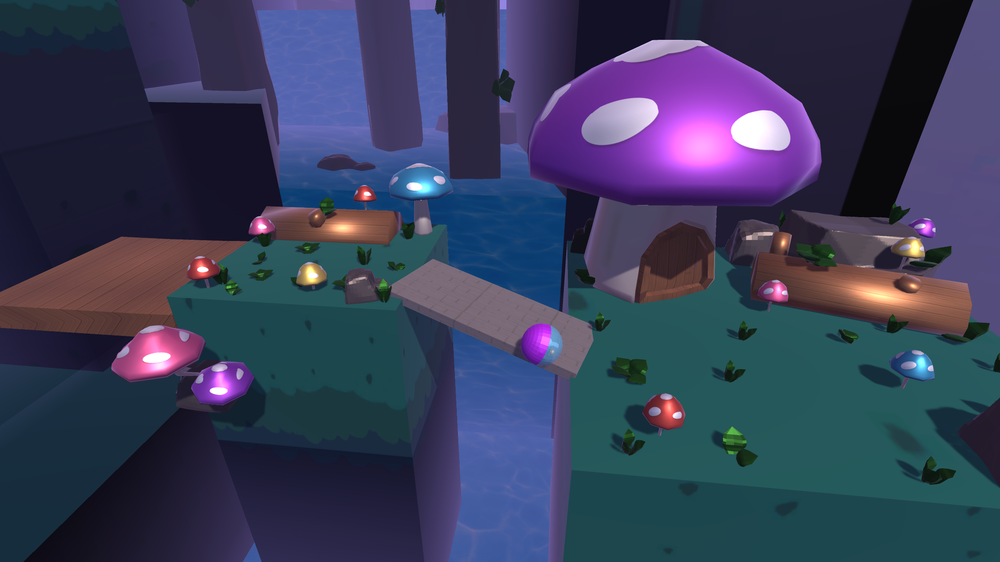
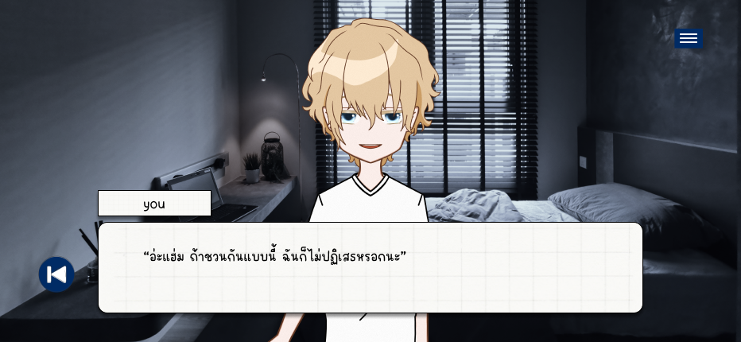
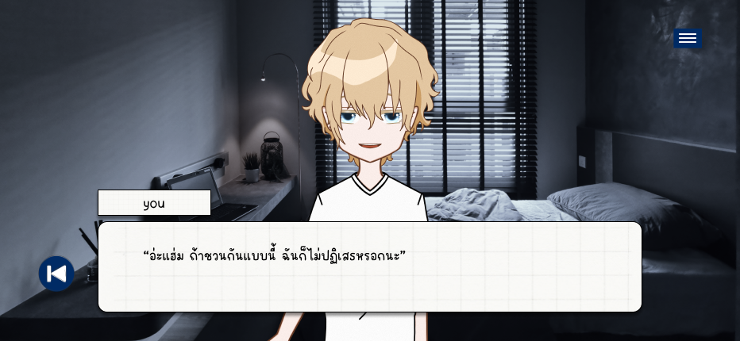
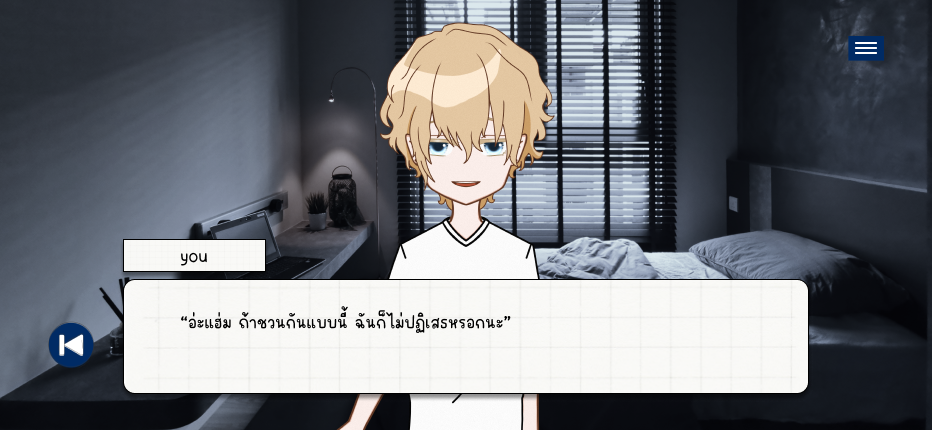

โปรเจกต์จุลนิพนธ์
ในการทำโปรเจกต์จุลนิพนธ์ ฉันได้รับหน้าที่สำคัญในหลายบทบาท ได้แก่ Game Director, Art Director, Character Artist, Writer, Video Editor
และ Artbook Designer ในระหว่างการทำงาน ฉันต้องเผชิญกับความท้าทายจากการที่บางงานไม่สามารถดำเนินการได้ตามแผนที่วางไว้
ส่งผลให้ต้องปรับตัวและจัดการกับสถานการณ์ที่เกิดขึ้นโดยทันที
ฉันตัดสินใจลงมือแก้ไขและดำเนินการในส่วนที่ยังไม่สมบูรณ์ด้วยตัวเอง เพื่อให้แน่ใจว่าโปรเจกต์จะเสร็จทันตามกำหนด ในกระบวนการนี้ ฉันได้เรียนรู้ทักษะการบริหารเวลา
การจัดลำดับความสำคัญ และการจัดการกับปัญหาภายใต้แรงกดดัน ซึ่งทำให้โปรเจกต์สามารถส่งมอบได้ตามเป้าหมาย และผลลัพธ์ที่ได้สะท้อนถึงความทุ่มเทและความตั้งใจของฉัน
Re-mindmemories
ประเภทเกม: Side Scroll
“Re-mindmemories” เป็นเกมแนว Horror + Psychological horror โดยเกมนี้ผู้เล่นจะต้องหลบหลีกจากวิญญาณร้ายทั้งหลายที่คิดจะกำจัดผู้เล่น
และหาทางหนีออกจากสถานที่ที่ประหลาดแห่งนี้ ฉันมีบทบาทสำคัญในทุกขั้นตอน ตั้งแต่การกำหนดทิศทางเกม การออกแบบงานศิลป์ ไปจนถึงการเขียนเรื่องราว
เกมนี้สำเร็จได้ด้วยความตั้งใจที่จะมอบประสบการณ์ที่น่าประทับใจให้ผู้เล่น พร้อมกับการพัฒนาทักษะของฉันในทุกด้าน"
My Game Trailer
VIDEO
Play Game
ART BOOK : Re-mindmemories
โปรเจคภายในห้องเรียน
ในระหว่างการทำโปรเจกต์ภายในห้องเรียน ฉันได้รับโอกาสในการทำงานร่วมกับเพื่อนร่วมทีมใหม่ ๆ ซึ่งเป็นประสบการณ์ที่มีค่ามาก ฉันได้เรียนรู้ทักษะการทำงานเป็นทีม
การสื่อสาร และการจัดการงานให้เสร็จทันตามกำหนด เป้าหมายหลักของโปรเจกต์นี้คือการนำเสนอผลงานที่ไม่เพียงแต่สะท้อนถึงความรู้ที่ได้เรียนมา
แต่ยังมีการผสมผสานระหว่างความคิดสร้างสรรค์และการทำงานร่วมกับผู้อื่น
การเขียนโค้ดและออกแบบงานในโปรเจกต์นี้ทำให้ฉันรู้สึกสนุกและท้าทาย ทุกขั้นตอนของการทำงานได้พัฒนาทักษะทั้งด้านเทคนิคและการประสานงานกับทีม
ฉันได้เรียนรู้วิธีการแก้ไขปัญหาและปรับตัวให้เข้ากับสถานการณ์ที่เปลี่ยนแปลงได้อย่างมีประสิทธิภาพ ซึ่งเป็นประสบการณ์ที่มีค่ามากในการพัฒนาทักษะทั้งในด้านวิชาการ
และการทำงานในอนาคต
BunBun and DumDum
ประเภทเกม: Parkour
บทบาทของฉัน : Lead Programmer และ Video Editor
"BunBun and DumDum" เป็นเกมแนว Parkour โดยผู้เล่นรับบทเป็นบันบันและดัมดัมที่อาศัยอยู่ในส่วนหนึ่งของยานอวกาศพอนเดอริ่ง
พวกเขาถูกพายุอวกาศพัดพาออกจากครอบครัวและพบว่าตัวเองติดอยู่ในมิติต่างๆ บันบันและดัมดัมต้องพยายามหาทางออกจากมิติเหล่านี้เพื่อกลับไปรวมตัวกับครอบครัวอีกครั้ง

My Game Trailer
VIDEO
Play Game
My Blessing
ประเภทเกม: Visual Novel
บทบาทของฉัน : Lead Programmer, Art Director, Character design และ Writer
"My Blessing" เป็นเกมแนว Visual Novel โดยผู้เล่นจะได้รับบทเป็นแมวที่หลงทาง พร้อมกับช่วยให้เด็กหนุ่มผ่านเรื่องราวความรัก
และเปิดเผยความจริงเบื้องหลังชะตากรรมอันลึกลับของเขา

Play Game
 
Play Game

Play Game